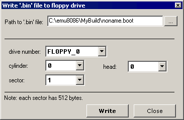

| 8086 Assembler Tutorial
for Beginners (Part 11) 编写你自己的操作系统 通常，计算机启动之后会读取你A:盘第一个512字节扇区（面 0 柱 0 区 1）， 并存放在0000h:7c00h，然后将控制权交给它。如果读取失败，bios将 使用第一个硬盘的MBR来完成这个工作。 这一节教程讲述如何从软盘启动，基本原理与从硬盘启动一样。 而使用软盘启动有如下优点:
一个简单的从软盘启动的程序:
将上述例子拷贝到Emu8086源代码编辑器，按下 [compile and emulate]。模拟器将会自动读取 “.boot”文件到000h:7c00h 你可以像普通程序一样运行上面的例子，也可以使用Virtual 菜单中的 Write 512 bytes at 7C00h to 将其写入一个虚拟软盘（模拟器安装 目录下的floppy_0文件）Boot Sector, 将你的程序写入一个虚拟软盘 之后，你可以选择Virtual Drive 菜单中的Boot from Floppy来从你 做好的操作系统中启动。 如果你对这方面感兴趣，你可以将虚拟软盘（FLOPPY_0）或者 ".boot"文件写入一个真正的软盘中，可以用它启动你的计算机。 我推荐使用 rawwrite for windows ,下载地址: http://uranus.it.swin.edu.au/~jn/linux/rawwrite.htm (最新的版本可以在所有的windows下工作!) 注意：.boot 文件的内容不是 ms-dos 兼容的启动区格式 （也就是说你无法在windows或者dos下读写软盘内容， 除非你重新格式化该软盘），所以不要用它存放数据。实际上， 无论你使用什么raw-write程序写入，他们都会删除软盘上 的数据。所以在制作启动盘之前，请确认盘上没有重要信息。 ".boot"文件被限制只有512字节大小（一个扇区大小）。如果你 的操作系统超过这个大小，你需要从其他扇区读取信息。你可以 在Sample目录下找到一个微型的操作系统的很好的例子： micro-os_loader.asm micro-os_kernel.asm 为了建立大一些的操作系统（超过512字节）， 你可以使用‘.bin’文件（'File'->'New'中选择‘Bin Templeate’） 使用模拟器菜单中的"Write .bin file to floppy...":  你还可以使用这个写‘boot’文件:
对于一张1440kb 软盘:
|